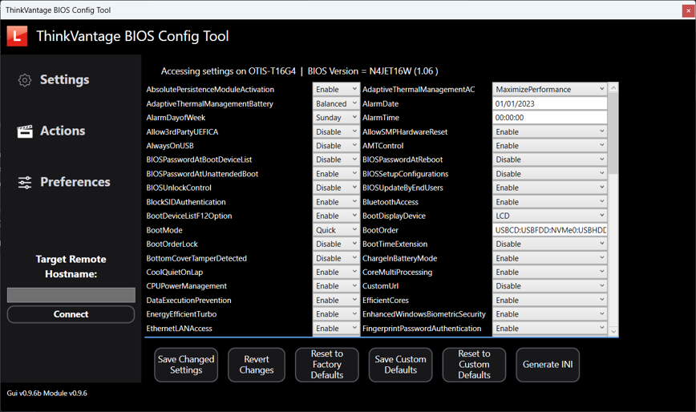

Think BIOS Config Tool V2
A PowerShell GUI for configuring BIOS settings, executing BIOS WMI functions, and creating Intune packages.
Inventory
- What it is
- A native PowerShell WPF GUI,
ThinkBiosConfigUI.ps1, backed by the Lenovo.BIOS.Config module. A complete rewrite of the original HTA tool. - Requires
- Windows PowerShell or PowerShell 7 in an elevated session. For Intune features: the Microsoft Graph modules, tenant permissions, and a Remediations license.
- Not supported
- Can be used as-is on some ThinkCentre desktops; however, because of WMI BIOS interface differences, certain functions may not work. This will be addressed in the future with a new common WMI BIOS Interface for ThinkPad, Thinkcentre and ThinkStation products.
- Install
Install-Script ThinkBiosConfigUI Install-Module Lenovo.BIOS.Config- Guide
- docs.lenovocdrt.com/guides/tbct_v2
What it does
- View, edit and export BIOS settings interactively.
- Import and export settings as
.inifiles, with an optional encrypted Supervisor password. - Change or clear the Supervisor password and fingerprint data, and create password-change files.
- Save and restore Custom Defaults.

Intune integration
From the GUI, create Intune-friendly artifacts, as a Win32 app package or as Remediations, and optionally upload them to your tenant through Microsoft Graph. When you build a Win32 package, the tool downloads IntuneWinAppUtil.exe for you if it is missing. Packaging and upload are currently available only through the GUI.
# Optional: Graph modules for Intune upload
Install-Module Microsoft.Graph -Scope CurrentUser -ForceRunning it
Open PowerShell as administrator and run ThinkBIOSConfigUI. The script requires elevation and imports Lenovo.BIOS.Config automatically, installing it from the PowerShell Gallery first if needed.
For script-driven configuration without the GUI, call the module directly: Export-LnvWmiSettings and Import-LnvWmiSettings handle INI-based BIOS profiles and Supervisor password management.